Mudas
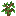Folhas
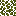Teia de aranha

Samambaia

Arbusto seco

Erva marinha
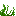Pepino do mar
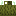Flores
Cogumelos

Fungos

Raízes

Brotos no Nether
Trepadeiras choronas
Trepadeiras retorcidas

Cana-de-acúcar
Alga
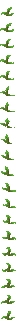Bambu
Tocha

Lâmpada do End

Planta do coro
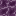Flor do coro
Baú
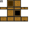Bancada de trabalho

Terra arada
fornalha
Escada de mão
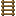Neve

Cacto

Toca-discos

Cercas

Tocha das almas

Blocos infestados

Blocos de cogumelo

Grades de ferro

Corrente

Vidraça

Trepadeiras
Vitória-régia
Cerca de tijolos do Nether

Mesa de encantamentos
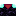Moldura do portal do End

Baú do ender
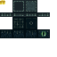Muros

Bigornas

Tapetes
Bloco de slime
Caminho de grama

Grama alta
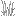Samambaia grande

Vidraças tingidas
Caixas de shulker
Azulejo
Coral

Gorgônias
Andaime
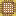Quadro

Vaso

Cabeças
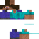Suporte de armaduras

Estandardes
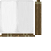Cristal do End
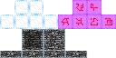Tear

Composteira

Barril

Alto-forno
Bancada de cartografia

Bancada de arco e flecha

Rebolo

Bancada de ferraria

Cortador
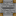Sino
Lampião

Lampião de almas

Fogueira

Fogueira das almas

Cogubrilho

Colmeias

Bloco de mel

Bloco de favo de mel
Magnetita

Âncora de renascimento

Vela

Cristal de ametista pequeno

Cristal de ametista grande
Cristal de ametista grande
Agregado de ametista